|
ハロウィーン２０１３おまけページ
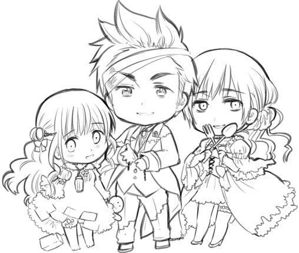
ホテルに出る幽霊ズ
おばけ（モルドバ君想像）
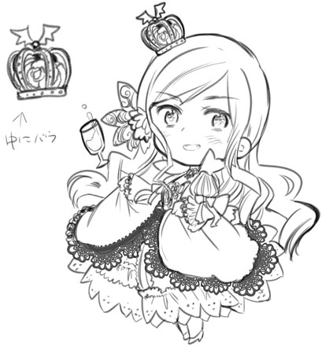
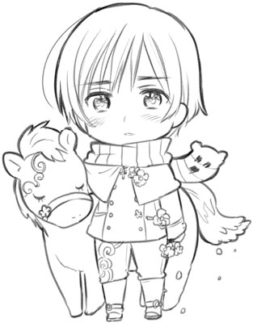
溺死しても
愛する人を迎えに行った助祭
クリスマスイヴの夜に迎えに行って
一緒に馬に乗ってる最中
死んでいることがばれて
追い払われてしまった。
花はアネモネだ
ウクライナの幽霊列車
５０〜６０年前から今にいたるまで
ウクライナでちょくちょく目撃される
不思議な列車の伝説があるらしい。
目撃者の目の前で消えたり、
無音で走ったかと思ったら
音が後からついてきたりするそう。
なにを乗せて走っているのか気になりますね。
カナダのホテルに出る幽霊
カナダのホテルに出るっていう礼儀正しいホテルマンの幽霊。
そのホテルの古い従業員衣装で現れ、荷物を運んだりドアを開けたり
幽霊になってもホテルマンの業務をこなしているそう。
彼はホテルマンを引退するときに
「また戻ってくる」と言っていたとか。
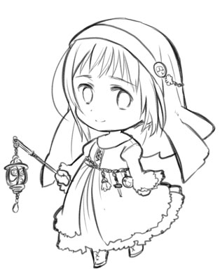
廃城に現れる村娘の幽霊
ある城主に捨てられた村娘が
自ら命を絶ってからというもの
彼女の幽霊がお城に現れるようになったらしい。
廃城になった今でも時々目撃されるそうな。
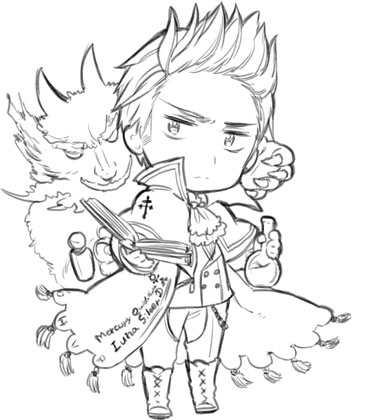
悪魔に魂を売ったといわれている錬金術師
彼は城に人ならざるものを住まわせていたらしく
彼の城では怪しい足音がしたり
物が浮いたり移動したりしているらしい。
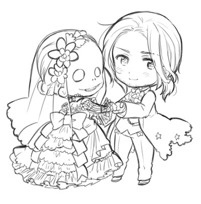
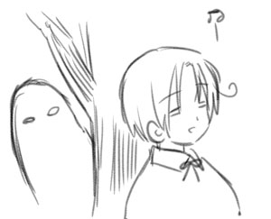
ニュージーランドさんの家のあんまり使わない豆知識。
ニュージーランドさんもなかなか幽霊話が多くて
新聞にも幽霊話が載るほどみたい。
ラーナック城（女性の霊が出る）
ネイピア刑務所（豪快にアピールしてくる幽霊達が出る)
ワイカト病院（幽霊が出ることで有名）
セントジェームズ劇場
（ロシア人が出る)
ハイウィック（犬の幽霊憑き物件。ずっと一緒にいられるぞ！犬好きにはたまらない）
幽霊スポットは数あれど
ウィキペディアにも「幽霊が出る」「幽霊の目撃証言がいっぱいある」
とか幽霊の存在がはっきり書かれる
ニュージーランドってすごい。
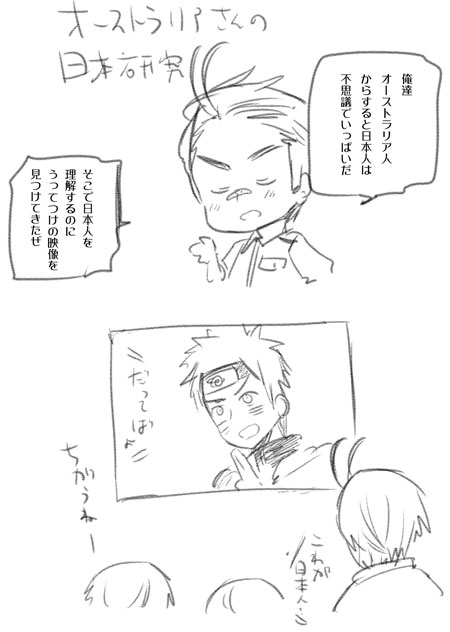
日本人の精神を学ぶ教材になったりしてるそうです。
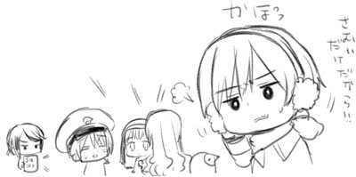
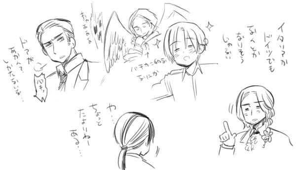
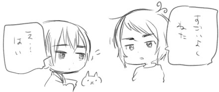
トルコのメイドさん幽霊
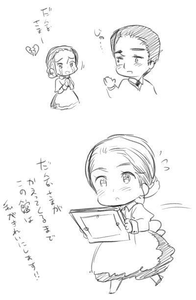
トルコのオランダ大使館で
大使と恋仲になったメイドさんがいたんだけど
大使がトルコを離れることになって
すぐにメイドさんは失意のうちに死んでしまったそう。
それからというものそのメイドさんの幽霊が出て
屋敷内でのメイド業務をこなしてるそうな。
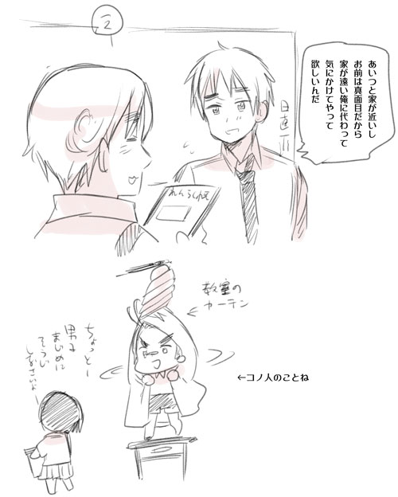
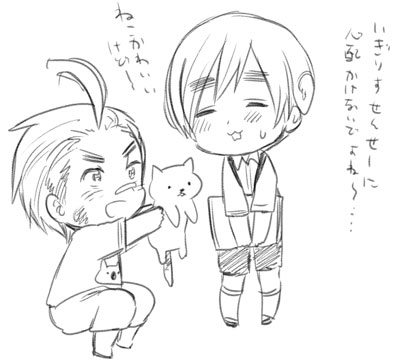
なんかそんな関係
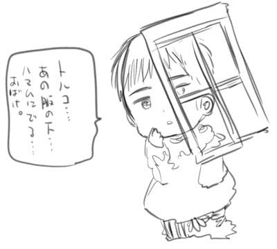

|